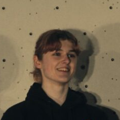
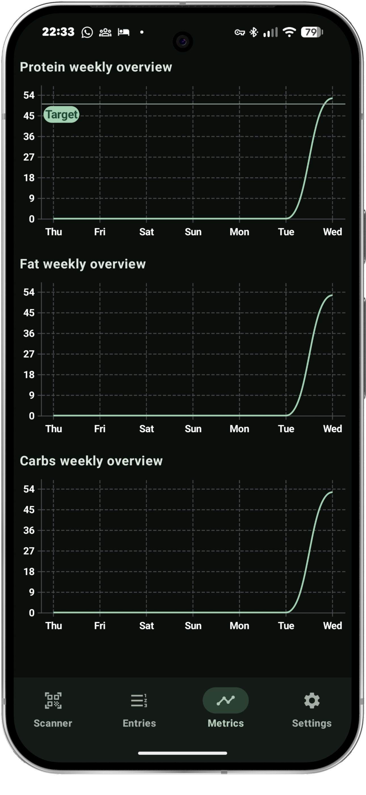
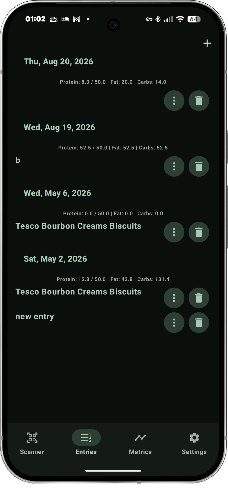
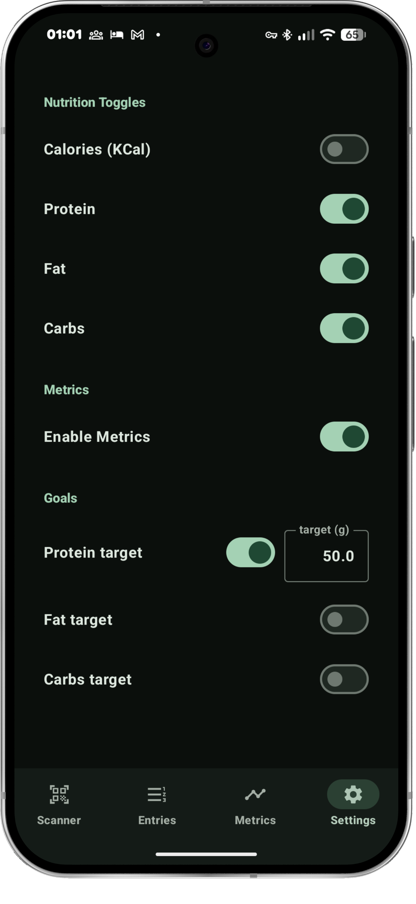

Hi 😄
I'm Hannah.
Currently busy with uni so I dont have a huge number of other projects to plug but when I do they'll be here!

Work
My most recent position was the N8 CIR winter intership, working at the University of Sheffield as a research software engineering intern.
Projects
Portfolio website
This portfolio page, a simple github page.
Dissertation Project
My dissertation project was a mobile app targeted towards users with disordered eating, aiming to let them track their eating habits without promoting harmful behaviours. The result was a Kotlin app built using Jetpack Compose.


